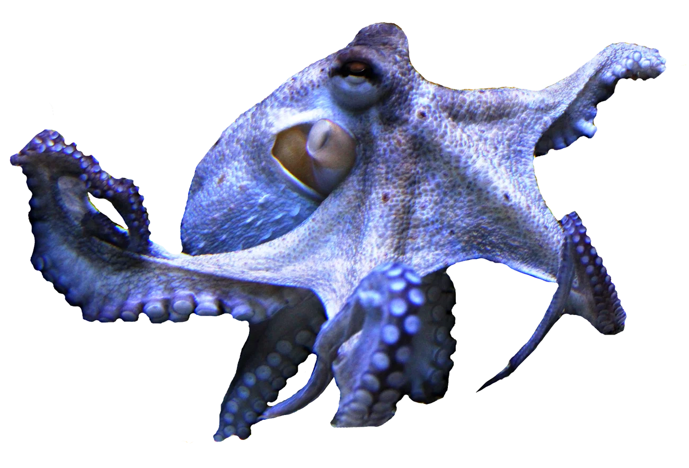
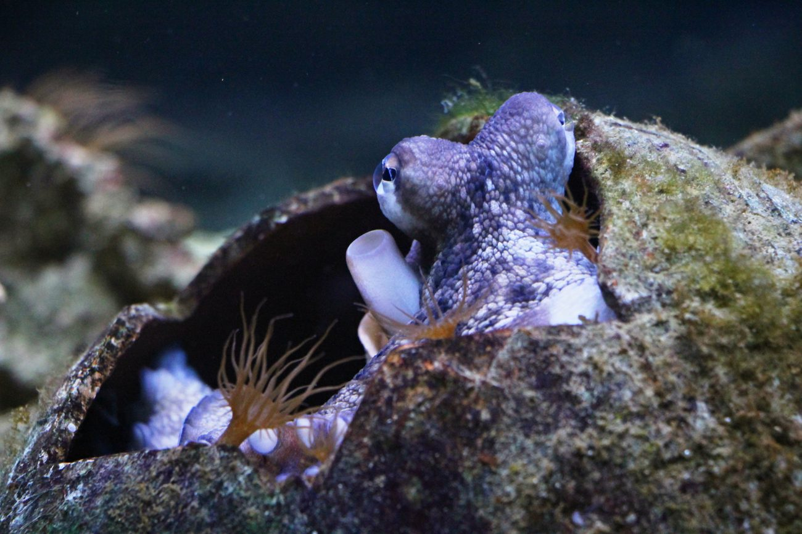
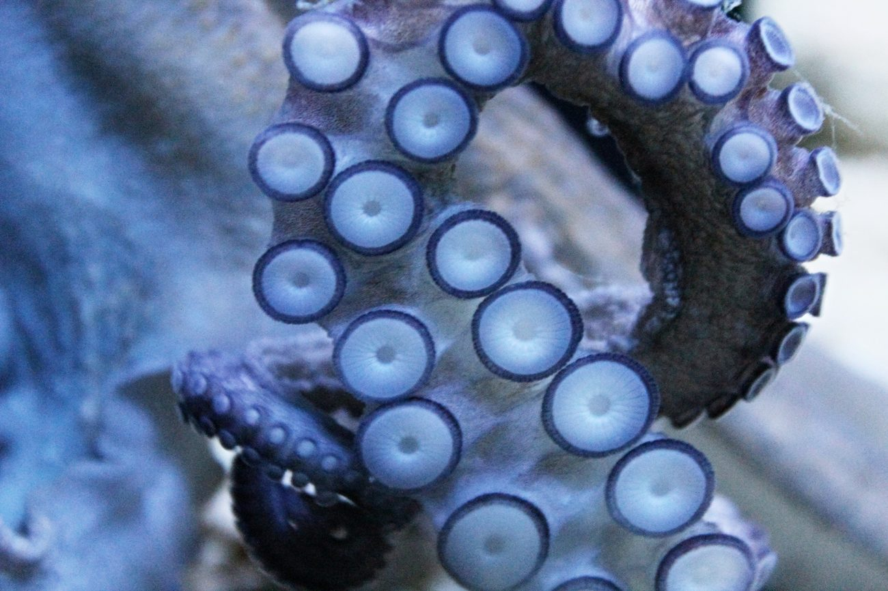

Chobotnice pobřežní je kosmopolit — obývá pobřežní vody prakticky celého světa. Nalezneme ji ve Středozemním moři, u břehů Velké Británie, na Azorech i Kanárech, kolem celé Afriky, v Indonésii i v obou Amerikách. Preferuje skalnaté a kamenité dno s dostatkem úkrytů, kde si buduje doupě.

Tělo tvoří měkký plášť a osm dlouhých ramen pokrytých přísavkami. Dospělá chobotnice dorůstá délky 30–90 cm, největší zaznamenaný jedinec měřil přes 4 metry. Hmotnost dospělce se pohybuje kolem 10–15 kg. Oči jsou velké a výkonné — dokážou rozlišit tvar, velikost, jas i orientaci objektů.

Chobotnice pobřežní žije jen 1–2 roky. Samec po páření umírá během několika měsíců. Samice přestane přijímat potravu a plně se věnuje potomkům — naklade 100 000 až 500 000 vajec a po celé tři měsíce inkubace je čistí a hlídá. S vylíhnutím posledního potomka umírá.